Asian Women Development Plan International
Standing with Asian women who live overseas
in 30+ countries and regions. in 9 languages, plus sign language. with 1,106 volunteers. since 2020.
AWDPI supports Asian women abroad who face domestic violence, gender-based violence or discrimination, in their own language.
What we stand for: Engaging, Embracing, Empowering, Against gender-based violence, For a gender-equal world
Everything we do, at a glance
Pick a section to start. Each one opens with a short summary and the key numbers.
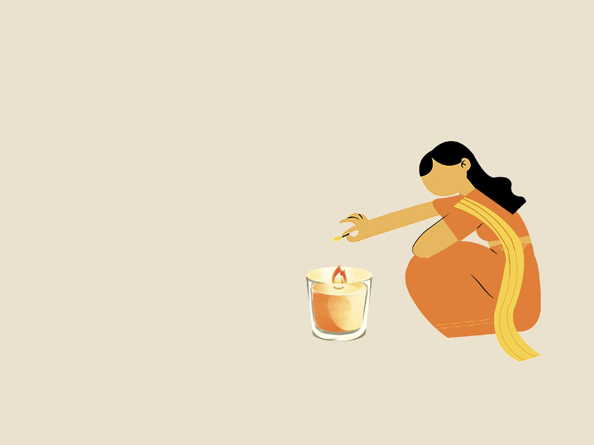
Get help
Talk to us on WeChat in Chinese, find your local hotline and download our legal handbooks.
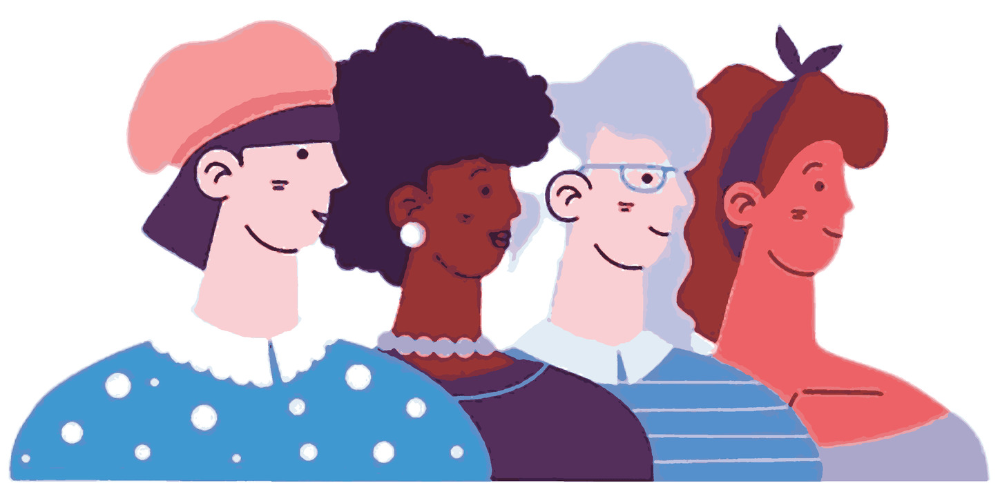
About AWDPI
Who we are, why we started in Belgium in 2020, and where our offices are.
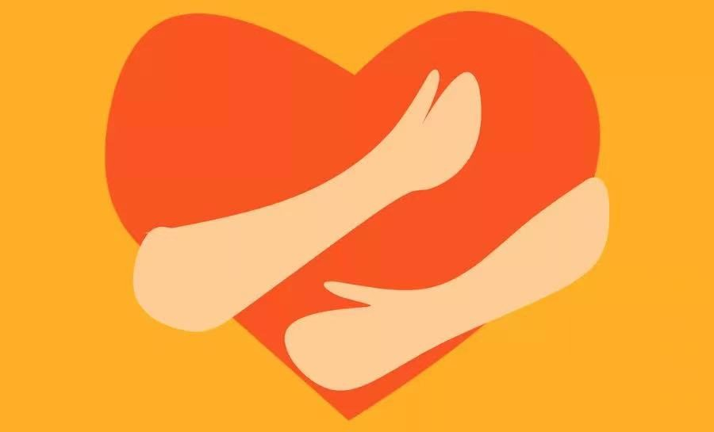
Focus areas
Our four programs: protection, violence-free spaces, leadership and campaigns.
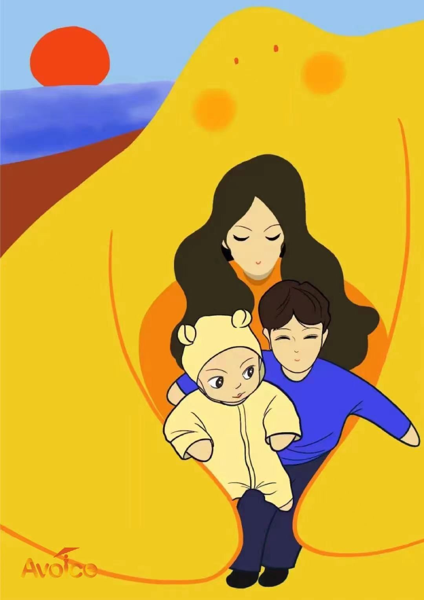
Avoice
Our first program, for overseas Chinese women facing domestic violence.
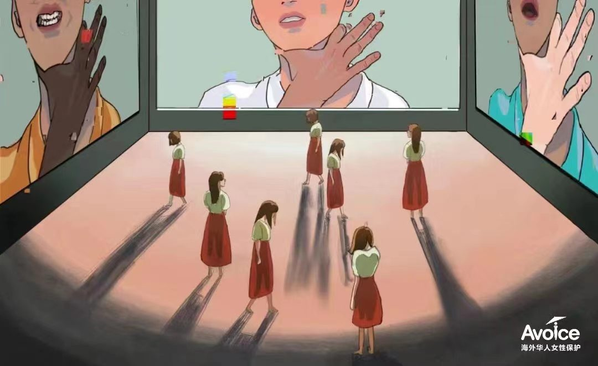
Research
Country studies and case studies on violence against Asian women.
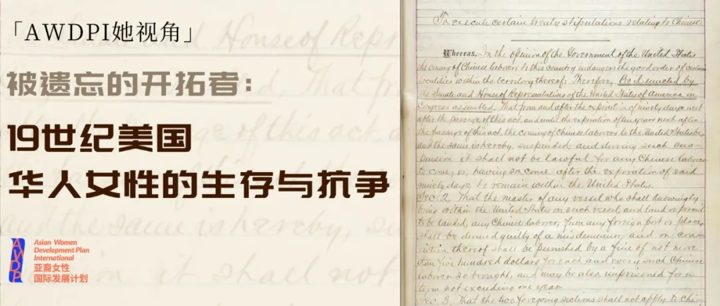
News & stories
Interviews, essays, event notices and opportunities, written in Chinese.

Support us
Partner with us, volunteer, fund our work or share it.
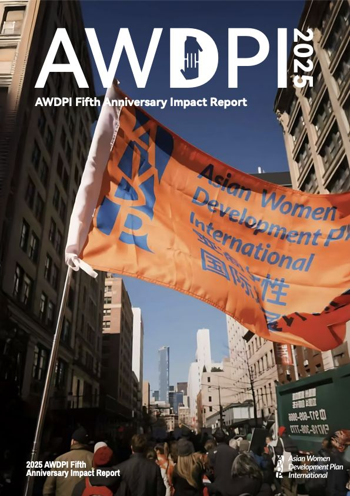
2025 Impact Report
Five years of our work in numbers, case stories and people.
Four programs, one goal
End discrimination and gender-based violence against overseas Asian women, and help them grow.
Where we work
More than 30 countries and regions across Europe, North America and the Asia-Pacific, run from five national offices.
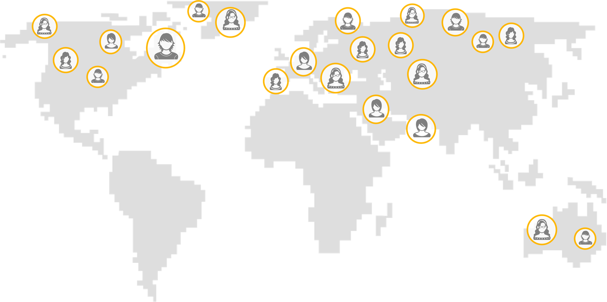
Point at an office to find it on the map.
Five years, step by step
From one pilot in Belgium to a registered international non-profit. Pick a year.
Avoice starts in Belgium
Avoice (Against Violence to Overseas Chinese Women) began in Belgium in the first weeks of the COVID-19 pandemic, to support Chinese women facing domestic violence abroad.
Pilots across Europe
Pilot projects opened in several European countries, with volunteers offering language, legal and psychological support.
30 countries
The work spread across Europe, North America and the Asia-Pacific, to 30 countries. Avoice received the Hagar Women Changing the World Award: “not about fixing the margins, but about strengthening the foundation.”
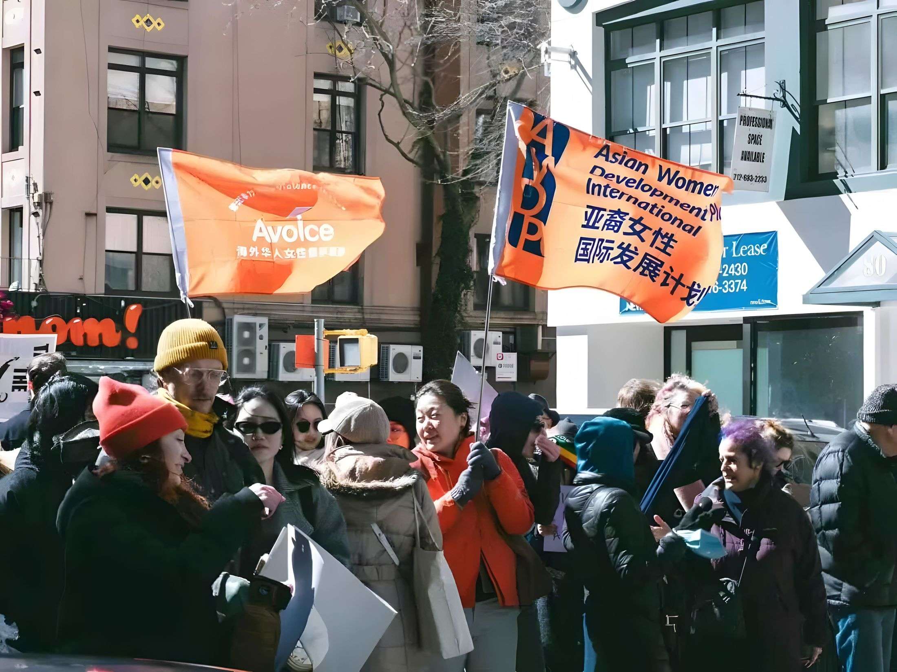
Registered non-profit
AWDPI registered as a non-profit in the United States, the United Kingdom and Belgium, growing from a volunteer team into an international organization.
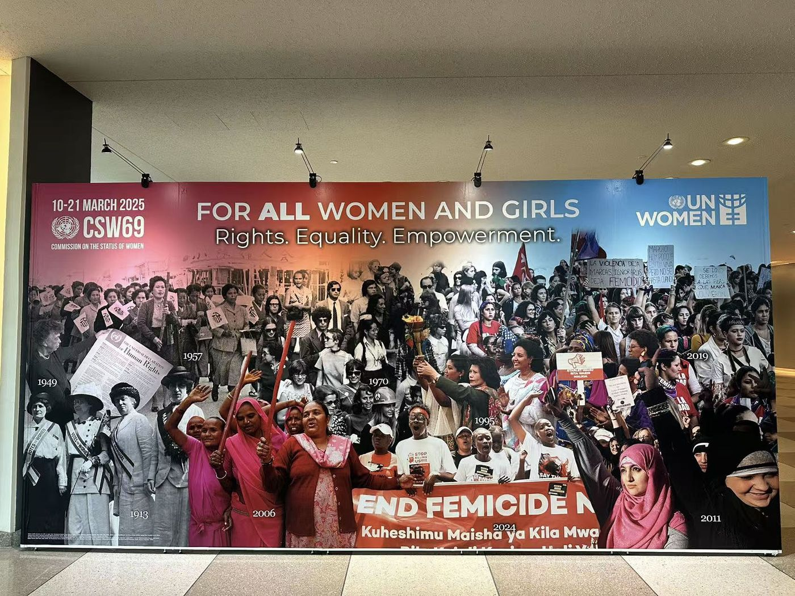
Recognised at the UN
At the CSW69 parallel forum at UN Headquarters in New York, AWDPI received the Global Outstanding Women's Public Welfare Organization Award.
Latest from AWDPI
Interviews, essays and events. Articles are written in Chinese.
AWDPI 她视角 | 被遗忘的开拓者：19世纪美国华人女性的生存与抗争
“她们的脚印埋在旧金山的泥土里，她们的血泪融进太平洋的浪涛中。”
AWDPI她视角｜专访钟睿莹：如何在生活中践行女性主义？（下篇）
冬令时的午后，伦敦的天空已悄然暗下来，稀稀落落的行人让错综复杂的街道显得些许冷清。然而，在伦敦最大的家庭暴力庇护与转介中心Hestia Life Beyond …
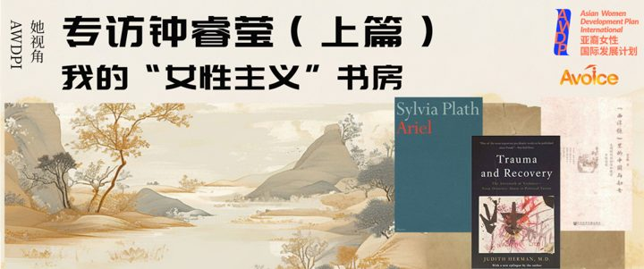
AWDPI她视角｜专访钟睿莹：我的“女性主义”书房（上篇）
“关心性别问题并不是某一天突然出现的选择，而是从我青春期的阅读与情感经验中慢慢积累、沉淀下来的一种能力。” 本期的“她视角专栏”，AWDPI邀请到正在剑桥大学多 …
Need to talk to someone?
Message the Avoice assistant on WeChat. Tell us your country and a name we can call you; a nickname is fine. In danger right now? Call your local emergency number first.